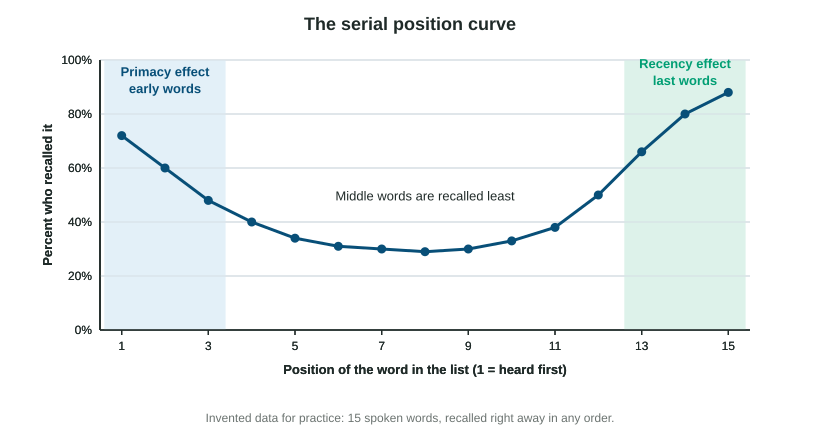

Encoding is getting information into memory. Some of it slips in on its own, but school learning is effortful encoding, and how you do it makes a big difference. The good news: the strategies that work are simple, and you can start using them on this page.
Organize it: mnemonics, chunks and hierarchies
A mnemonic (the first m is silent) is a memory aid that links new information to something easier to remember. Acronyms like ROY G BIV for the colors of the rainbow, rhymes ("i before e"), and vivid images are all mnemonics.
The method of loci is one of the oldest. Picture a route you know well, such as walking through your home, and place each item you need to remember at a spot along it. To recall, walk the route in your mind. Memory champions use it for long lists.
Chunking groups separate items into a few meaningful units. Short-term memory holds only a handful of units at once (often quoted as about seven; newer estimates put it closer to four chunks). "FBICIAUSA" is nine letters but only three chunks if you know the agencies. A phone number is easier as an area code, a prefix and four digits.
Hierarchies organize information from broad to specific, like an outline with main headings, subheadings and details. A hierarchy gives retrieval a path to follow: remember the heading, and the details come with it.
All of these work for the same reason: they connect new information to what you already know, which is deeper processing.
Space it out
The spacing effect is one of the most reliable findings in all of psychology, repeated in hundreds of studies with words, facts, skills, children and adults. The same total study time produces better long-term memory when it is spread out over several sessions (distributed practice, also called spaced practice) than when it is done in one block (massed practice, or cramming).
Cramming feels effective because the material is fresh during the session and the next day. But memories built that way fade fast. Spacing makes each session a little harder, because you have partly forgotten, and that effort to rebuild the memory is what makes it last.
Worked example: reading a spacing study. Two groups of tenth graders each study 30 Spanish words for three 15-minute sessions. One group does all three sessions on one day; the other does one session a week for three weeks. Four weeks later, the spaced group writes 18 of 30 words and the crammed group 10 of 30.
Step 1: what was changed? The timing of the sessions (the independent variable). Total time was the same.
Step 2: what was measured? Words written correctly four weeks later (the dependent variable).
Step 3: what does the result show? Spaced study led to 8 more words remembered, about 60% versus 33%. That supports the spacing effect.
The serial position effect

Hear a list of words once and write down as many as you can, and you will probably recall the first few and the last few best. Plotted by position, recall makes a U shape: the serial position curve.
- The primacy effect (the high start): the first words get more mental repetition, because there is little else in mind yet, so they reach long-term memory.
- The recency effect (the high end): the last words are still in short-term memory when you start writing.
Evidence for this explanation: if people count backward for 30 seconds before recalling, the recency effect mostly disappears, because counting pushes the last words out of short-term memory, but the primacy effect stays.
| Primacy effect | Recency effect | |
|---|---|---|
| Which items | first in the list | last in the list |
| Why | more repetition, so encoded into long-term memory | still in short-term memory |
| After a 30-second distraction | stays | mostly disappears |
Everyday versions: the first and last candidates in a day of interviews, the first and last songs of a concert, and the opening and closing of a speech are remembered best.